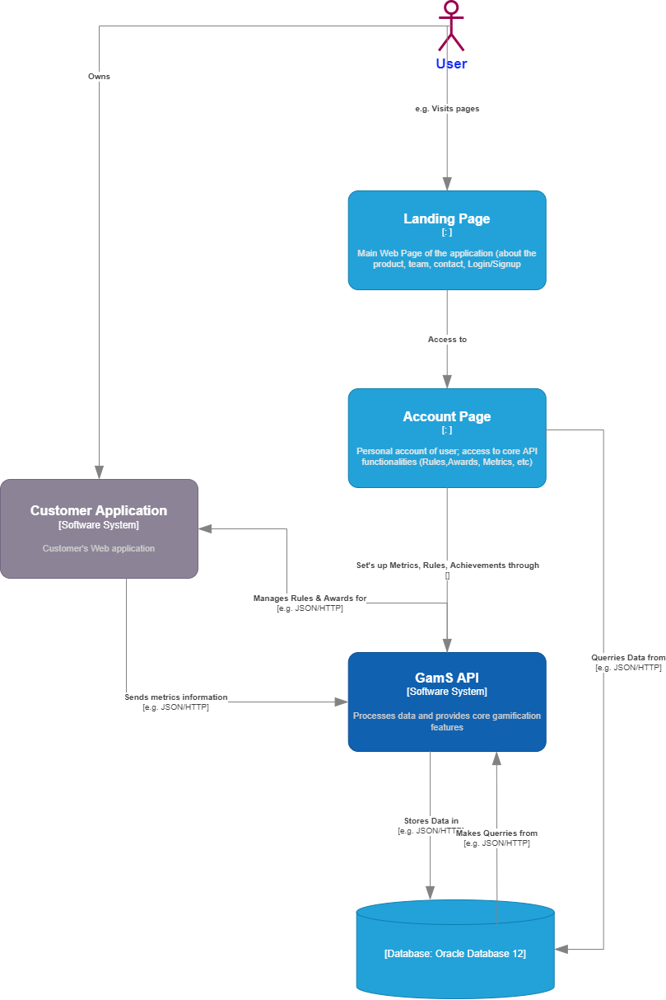
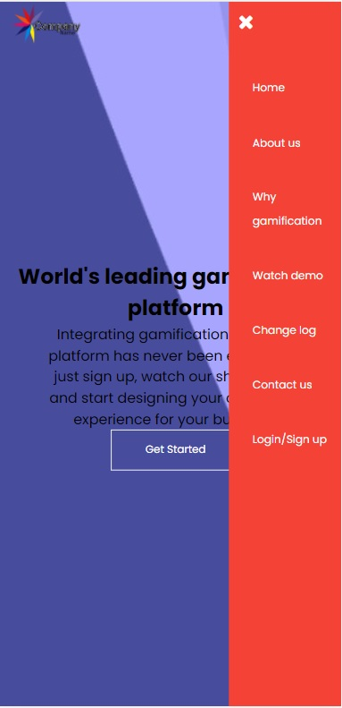

"Gamification as a Service" is an API that allows applications to easily define, customize and integrate a gamification system onto their own platform. This document will procide an overview of the first release (1.0) of our product.
The purpose of this document is, probably as an exercise in writing documentation in a scholarly format. It is also intended for those who will review the quality and functionality of our application (i.e. Our teachers), and will most likely count towards the grading of this project. So hopefully we don't mess it up too much.
The product being developed is an API that allows customers to integrate gamification into their own platforms, be it web or mobile applications. The main benefit of this API is the ease with which one can define the rules that underly such a system. Our application allows the user to specify what metrics are being counted (such as the number of consecutive logins, or number of comments posted), what awards are given (i.e. Badges, Achievements, Credits, etc) and most importantly, it allows the user to customize the rules specifying how these awards are distribuited (what milestones need to be achieved for an award to be granted). The intended target audience are web applications with large numbers of registered users, who look at ways to increase user engagement and retention.
This application is being developed at the request of our teachers, counting towards the final grade for the "Web Technologies" class. Since there aren't many competitors on the market for this particular idea, it also represents a good case study and entreprenorial exercise.
The application consists of 4 main components: a landing webpage, which represents the contact point with the customers. This page describes the product and the team, and offers contact, and Sign Up/Sign in functionalities. A second component is the private account of the user, where they can manage their applications and their rules/achievements/awards. Next, there is the database which stores and delivers all the pertaining to the user's account, as well as the information gathered from the user's integrated platforms. Finally there's the GamS API which binds all of these together and offers the core functionality of our service.
Our API is designed to streamline the process of gamifying a platform. As such, the main functionalities are structured into three simple categories to make the process both easy and highly flexible. The user can gamify as many Web Applications as they wish. After registering the application, they must decide what they want to measure in order to give out awards. Such measurements (metrics) could be the number of comments posted by someone, or the number of uploads, or anything else the client chooses to. Next, the client is asked to define Achievement categories as well as prizes (which could be points, badges, avatars, etc). Finally, clients can define rules to decide when each of those achievements and prizes is awarded.
A typical flow for a customer would be as follows:
We expect a wider range of user classes to be using our application, however we anticipate the following subgroups to show more interest:
The application will be cross-platform integrable. The components will be written and designed in HTML5 + CSS for styling, whilst the API itself will employ NodeJS as the main programming language. For databases we will be using MariaDB.
The project has a wide range of constraints (not mentioning the fact we can't use frameworks). Regarding the design, the application must be intuitive and easy to use by any user, regardless of their technical capabilities. This comes as a challenge when one aims to pack a lot of functionality, and yet present it as simply as possible.
Another constraint regards data security. In order to issue out awards and achievements, the API must receive information from the client website regarding certain user information. Such information, although not sensitive, must be properly encrpyted and processed to avoid any data leaks.
Our GamS has been purposedly designed to be intuitive and easy to use. As such, any comprehensive documentation would be redundant. We will however offer a Demo Video, showcasing the main functionalities and how to use them.
Although our API manages the Gamification System, it is assumed the client will manage how these rewards are displayed on their webpage. As such, it is assumed the customer will be responsible with the display and placement of the awards on their page.
This is the first page the customer interacts with. It offers information about the team, information about gamification and why to use it, a link towards a Demo video. It also provides a "Contact us" form as well as the Login/Register functionality.
Once logged in, the user is redirected to a different page. This page will show an overview of the user's application, and offers the following functionalities:
When clicking on a certain domain from the "Manage Apps" Menu, the user will be prompted to a new page dedicated to that particular domain. Here the user can define and change all aspects pertaining to that individual application. The functionalities of this page include:
On the user side, the application will run on any Desktop browser, such as Chrome, Opera, Edge, that supports HTML,CSS and Javascript. On the backend, our API services will run on the cloud, and as such some cloud services will be required for the project. The communication protocols (client-served, server-server) used will be TCP.
The API will store and process information in a Database, so a software service such as "AWS Database Services" will be employed. The memory required can be significant, as the application permits the users to upload media materials to be issued as or associated with awards.
The application will also make use of existing email services (for communication with the client). In addition, such services and software as listed below will be used:
Hosting services as well as a registered domain will also be required for the website.
As mentioned above, for communication with the client, the existing email services will be used.
For server-client communication, in order to maintain the safety of information, it is recommended that the HTTPS protocol be used.